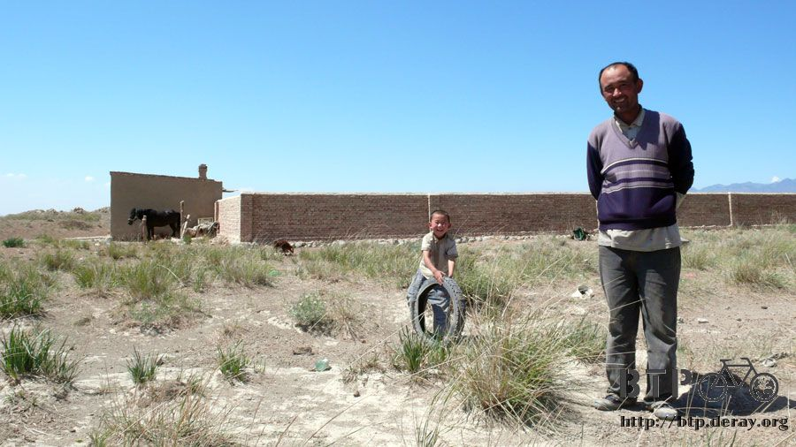

The pride of Xinjiang
I originally planed to depart at 6 AM to avoid the strong head wind. This way I may hit Urumchi before noon.
To make this plan work, I can not just lie in bed till noon time.
Therefore I slept earlier last night right after I finished my dinner.
The wind blew hard during the night. The sound of rustling leaves in the wind never stopped.
I thought that the wind was only strong during the day, how come it is so restless tonight?
Just like the typhoon nights back in Taiwan, I closed my eyes and tried to sleep despite the howling sound of wind.
Next day, the wind was still blowing hard. The temperature was as low as ten something degrees Celsius.
I opened the door and looked outside. It rained hard last night, and the ground was still wet.
The heavy and dark clouds are moving toward the east with the wind. This is a windy and rainy day.
What do I do? My plan of early departure will not work now.
If the weather keeps on raging, I even doubt that I can leave here today. 
With no solution in sight, I end up reading in the room.
Hopefully the sky will clear after sometime, or I might need to stay at Dawanching for one more day.
About 9 AM, the sunshine finally broke out of the clouds.
The strong wind has taken the dark cloud to the south-eastern side, and the blue sky begins to recover in the north-western side.
“Time to Go! Let's hit the road, Dido!”
I said goodbye to the hotel owner, who threatened me to call the police when I do not show him my ID,
and also said goodbye to this adorable town, Dawanching.
Now that the rain has stopped, however, the head wind was still strong.
Dido and I were wagging in the wind, the effort of trying to keep in a straight line was totally in vain.
On my right side, I can see the snowy Mountain that is almost too beautiful to exist.
I try hard to support Dido from being blown onto the ground.
Holding my breath, I try to print this magnificent view of the nature into my mind.
The wind is chilling, but the air is fresh. I take a deep breath to fill the cool air into every cell of my lungs.
From the first step on the pedal, the head wind and side wind never stops. I try hard to achieve this ridiculous 6 KpH speed.
This is almost as slow as walking. However, I convince myself to keep on pedaling.
Once I step down and start walking Dido, there is no way I can start pedaling again.
The distance between Dawanching and Urumchi is only 90 kilometer long.
I was planning to leave early in the morning and arrive at noon. But with the head wind,
I have only achieved a little more than 40 KM starting from 9:30 AM to 4 PM.
I don't know what has gotten into me. I did not stop for meals all along the way.
There are several stops along the road, which provides shelter and food, but I did not stop at any of these shops.
Kick in the pedal and biting my teeth, I said no to the staffs in restaurants and slowly moved forward on the road.
From the point of view of the passerby, they might find me funny.
It seems I am working my ass off pedaling the bike, but I proceed like a movie in slow motion.
This may look like some kind of silent film, but I am almost killing myself.
I slowly pass by a place called Yiancheng (Salt City) around noon. People said that this place is the Dead Sea of China
Therefore, the highlight of this place is something like floating in salt lake or mud spa.
I am totally not interested in these things and only want to eat something to refill my energy.
However, I still didn't stop for any food. I kept on moving on the bike. One by one, the signs of restaurants pass me by.
Maybe it is because deep down I know it would be really difficult to start pedaling again after I stopped in this kind of wind.
I choose not to stop at all.
Slowly, I arrived at a small town. This place may seem totally beaten, but I got this feeling, it may be a very lively place in the past.
But now that there is nothing left here. Not even restaurants.
The sole shop left in this place has nothing besides instant noodle and drinks.
I bought a coke here, and started eating my own cookies at the door. That is my lunch for today.

After I finished the food, I still feel nothing in my stomach.
Is it not an illusion that I just ate something?
Walking back into the shop, I bought a pack of instant noodles and made it with the hot water in the shop.
A small guy suddenly showed up while I was waiting for my noodles to be ready.
He is only 18 month old and is totally adorable. As his parents both work at Urumuchi and do not come back everyday,
this child was separated from his parent at this age.
I ran to Dido and find out a pack of chocolate which costs one dollar a pack from the bag. I hand him the chocolate.

He is not afraid of strangers at all, and is really cute when he sticks to my side. Even though he doesn't speak yet,
but he is already very charming with the big rolling eyes.
The grandma says that this is the first time he has ever eaten chocolate.
I helped him unwrapp the chocolate and watched him slowly eating it.
One does not need to teach a child how to eat their candy; they were born with this knowledge.
I chat with the shop lady while consuming the noodle.
It turns out that this beaten town used to be a train station. It used to have its glorious time.
However, that is one turned page now. Today, neither passenger nor cargo train stops here.
The town slowly died to what it looks like today.
I asked another question which concerns me more.
"Will the wind be as strong as now all the way to Urmuchi?"
The shop lady says that Urmuchi is not a windy city. Just keep on going for more than 10 kilometers, the wind will die down a bit.
This news excites me more than hitting a small jackpot! After only 10 kilometers or so, my suffering will be over!
Since the shop lady did not state the exact distance, I will assume it is 15 kilometers from here.
I said goodbye with the kid, start crawling at 6 KpH on the bike again.
It was merely 15 kilometer and it took me two and a half hours to get there. This is unimaginably slow.
And the crawling did not lead me to any destination. No town, no shop, nothing like what the shop lady said.
She said that there will be a town that allows me to have some food and rest.
Even more disappointing, the wind blows as hard as ever. I even have the feeling that it is getting stronger and stronger.
The head wind will randomly change its direction, it either blows me off the road or pushes me to the passing cars.
I saw something yellow far away at my side around 3 o'clock. It looks like a lake, but I am not certain of it since it is too far away.

Since I am only crawling now, it won't hurt to see what that is.
I walk Dido to the direction. It is too dangerous to put Dido just aside the road.

After the road gets really bumpy, I decide to hide Dido and walk there myself.
This is a beautiful grassland, and filled with various kinds of... dung. This place must be filled with cattle.

The weather is cool, around 25 degrees Celsius. The wind blows on the grassland, and the sheep cling to each other trying to keep warm.
They will eat the grass and sleep side by side, quite adorable.
These sheep are not afraid of strangers at all. If I try to walk like a cat, even if I am just standing by them they will not run away.
They will just glance at me and keep on biting the grass.
Some of they are almost naked. I guess they should be sheep.

I feel a bit sorry that I have been eating mutton since I arrived at Xinjiang. You sheep are not only adorable but also delicious..
This guy is the owner of the sheep. All of these sheep belongs to him. The little guy is his child.

I continue my adventure and walk to the lake.
All these different plants have their own territories, it is almost like someone has separated them with a line.


As I get closer to the lakeshore, I am more certain that this is a lake.
The wave keeps on splashing on the shore, and this lake is even more yellow then the yellow river
The sheep owner says the reason of the yellowness is because of the wind.
The wind blows on the lake and makes the water go round. This brings the mud up and turns the water yellow.
When the wind dies down, the lake will be crystal clear, you won't see even a sand in it.

Since the wind is blowing hard, the wave is also very high.
If I didn't already know that this was a lake, I would guess that I was at a coastline.
I walked along the lakeshore towards the sheep at the other side and took some pictures.
It was at this time I found out that I forgot where I hid Dido.
This is quite a large grassland, and I hid Dido pretty well. It really took me a while before I found Dido.
When I saw Dido, I draw a circle in the air with my hands. I tell him that there are a lot of sheep at this place.
Then I waveed my hand and said that there was a large lake just ahead,
and the waves are so high that it looks just like the waves of the sea.
Talking to Dido has already become my habit.
I will share what I have in mind with Dido; it could be what I saw or what I just ate, or whatever that comes across my mind.
Normally the first sentence I say everyday is "Morning Dido",
and when I start the journey of the day, I will say "Let's go Dido!"
Dido is a reliable friend. It carries all my baggage and me all along the way. But when it's my turn to carry it upstairs,
which is a rare thing, I murmur that "you are really heavy.. Have you ever considered losing some weight?".
But all the weight it gained is due to the snacks I bought along the way.
I left the lake around four thirty. Now it is still 50 kilometers from Urumchi
If the head wind keeps on blowing and I keep on going at 6 KpH, by the time I arrive at Urumchi it will be midnight.
It was after sometime before I arrived at the town that the shop lady mentioned.
It is actually more than twenty kilometers, not just more than ten kilometers.
At this time I should be getting my dinner not my lunch. But I still ignore the shops and eat nothing.

I bought two local ice cream stick in a store, and asked the "Frequently Asked Question".
"Will it be this windy all the way to Urumchi?"
No one is confident enough to give me an exact answer.
Some say it is this windy all the way,and some say after I cross the wind turbine farm, the wind will not be as strong.
The speed of the head wind will be the deciding factor if I will arrive at Urumchi at midnight or dawn. I better keep on going.
Urumchi is so close, but it is so difficult to get there. The last part of my journey in China is not at all easy.
Soon after I leave the town, the wind turbines appear.
As a rough estimate, there might be more than ten thousand turbines.
This makes sense; it would be a shame not to have these turbines at this windy place.

They can put this up all the way to Turpan. And especially the thirty-mile wind gap.
The wind there is so strong; the turbines might even be blown apart.
The last time I saw these wind mills was when I was still in Gansu.
Since there are a lot of oil fields in Xinjiang, they never have the problem of energy shortage.
It is a good thing to see them utilizing the green way to gather energy.
Since the wind turbine farm is so massive and beautiful,
there are even couples-to-be coming to this place to take pictures for their wedding portfolio.
The guys in the store said that the wind will not be as strong soon after I pass this wind turbine farm.
Although they are not very confident about this, I still grabbed this hope tightly and kept on going.
The wind did not just stop like what I wished. As I rode into the mountain area and climbed over the hills, I am about 25 kilometer outside Urumchi.
The head wind finally dies down slowly, and becomes a little disturbing but not hazardous to my safety on the road.

According to speedometer, my speed had risen back to 15 KpH from 6 KpH.
Even though that is still slow, but it is already a major speedup to this crawling day.
A slow ride does not always equal to an easy ride. My knees felt weak and my eyes felt dry.
Since my sunglasses have been blown away by the wind on the day before yesterday, I can only rely on the normal glasses,
and that does not keep my eyes from the harm of blinding sunshine and the UV ray.
My eyes are so dry that every time I blink it hurts. Thank god that I still have some eye drops.
But when applying the eye drop, I have to put the eye drop directly against my eye balls,
or the drop will be lost in the wind before it lands on my eyeball.

Up and down at the hills, I slowly approach Urumchi. Thanks for the highway, there are few vehicles going on this road.
I can ride on this road peacefully.
A little past 9 I am out of the mountain area, and beginning to see the shape of the city.
I thought I have already arrived at Urumchi, and said to my self "It's a so so place.. Not really a big city."

But it turns out that Urumchi is still 10 kilometers away. I ride on the road alongside the riverbank.
Urumchi really is not a windy place; the nightmare in the wind gap is finally over.

Riding on the road by the riverbank feels very good. Of course bicycles are forbidden on this road, but who cares.
Advance! Dido! Urumchi is only minutes away!
Before I arrived at Urumchi, this city was only a fantasy to me. It is so remote, and the name is so exotic.
I can't even imagine how the city looks like. But after the long day's ride in the head wind,
the city finally steps out of the fantasy and comes into reality.
I finally arrived at the last major city in the Chinese part of my journey, and the supply station of the long trip,
Urumchi!

Skyscrapers one after another, beautiful garden arts lay around the place.
Wide road, lively city, designers stores scattered all around.
After I been through so many deserts and wilderness coming back to such a great city,
there are so many thoughts that come into my head.
Even compared to Taipei or any other major city in my past journey, Urumchi stands at the same level of excellence.
Am I really in Xinjiang? This is unbelievable. Even though I know this would be a big and animated city,
the scale of Urumchi greatly exceeds my imagination.
This place is really the pride of Xinjiang.

I asked several passersby for directions and move towards the computer city.
If I can stay at a place that is closer to it, it will be easier to collect my package.
Luckily, I found a guesthouse just 300 meter outside the computer city.
The cheapest room is 20 a night. I will first book for two nights, and extend it if needed.
Even though the price is very affordable, the standard of this guesthouse is very high.
To better describe it… This is the only place I have stayed in the 50 days of my journey that comes with an elevator.
I stepped outside the guesthouse and bought a large stir-fry jelly and two oden on a stick while the staff was filling the paperwork for me.
The stir-fry jelly is really delicious. I had this once when I was in Xian.
It tastes like stir-fry daikon cake, a little bit soft, side with sesame sauce, garlic paste and chili sauce, DELICIOUS!
There is a long term guest in the guest house who saw me eating ordinary food from a road side stall with so much emotion.
"This is my first meal of the day. I am starving." He nods to me showing that he understands me.
He tells me about the surroundings. I am really lucky today, staying at a place with convenient transportation.
This place is like a bus transit center, I can take the bus to most places.
This is really an affordable and convenient guesthouse.
I filled my stomach easily. It costs a lot of money since I have been always eating BBQ recently.
If I don't watch my wallet, my journey will turn into a millionaire's holiday.
Although there is already a person who is staying in the room for three that I am in,
he doesn't look like a bad guy and will be leaving tomorrow.
Besides, I will not leave the room tonight, so my baggage will be safe in this room.
This room will be totally my territory after he leaves tomorrow. Wahahahaha.
Urumchi is still a lively place in the evening.
The noise of the shops and the passerby only dies down two hours after midnight.
Arriving at Urumuvhi in one piece is a great encouragement to me.
When I think back to the times when I was still planning my journey, I did not even have a clue on how to get to Urumchi from Beijing.
And now, here I am.
In this nearly-five-thousand-kilometers journey, there has been sun and rain, laughter and tears, and I have finally arrived at Urumchi safely.
Although my final destination Paris is still more than ten thousand kilometers away, but in my mind, the goal is only a step ahead.